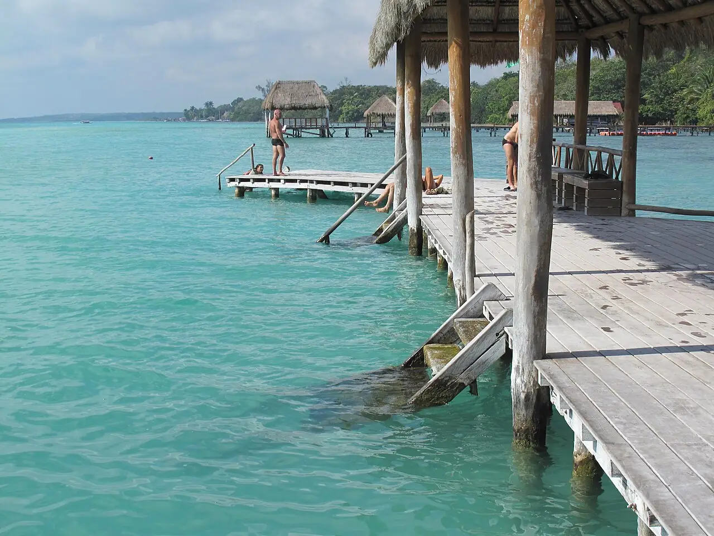

Lagune de Bacalar
Quintana Roo, Mexique · kayak, paddle, baignade

Lagune d’eau douce du sud du Quintana Roo, surnommée « lagune aux sept couleurs » pour ses nuances de bleu. Peu profonde près des rives, elle se prête au paddle, au kayak et à la baignade depuis les pontons publics du village.
- Lieu
- Quintana Roo, Mexique
- Niveau
- Débutant
- Activités
- kayak, paddle, baignade
- Type d'eau
- lake
- Coordonnées
- 18.68, -88.39 (position approximative du secteur)
Dangers à connaître
- Stromatolites fragiles près des berges : ne les piétine pas et ne t’y appuie pas.
- Par vent soutenu, le retour en paddle ou en kayak peut devenir difficile : reste près du bord.
Le conseil d'Ocean Buddy
Évite la crème solaire classique et ne marche pas sur les stromatolites, ces formations vivantes très fragiles des rives.
Ouvrir dans Ocean Buddy Télécharger sur l'App Store
Source : Fiche Ocean Buddy · septembre 2026 · à vérifier localement.